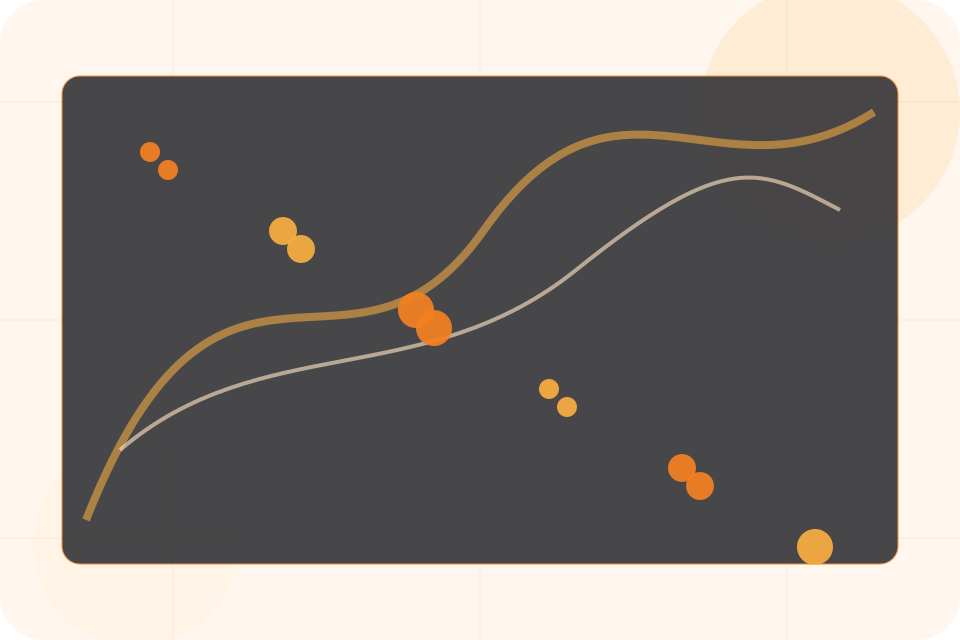
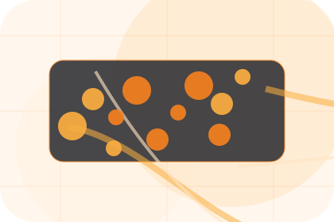
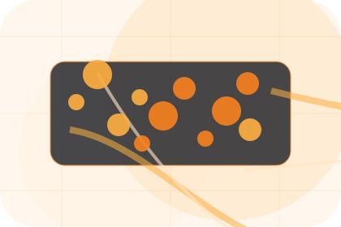
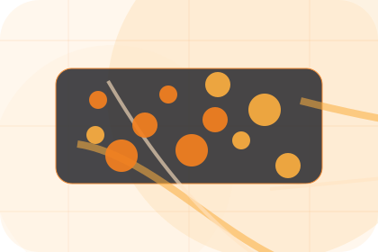
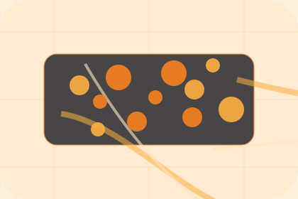

Pressure
Risk names the real friction visitors bring to the security route, so the page feels relevant before any claim is made.
Security / 01
Security opens as a clear technology decision hub: what Nexus offers, who it helps, why it matters, and which route to take first.
The first screen combines positioning, proof, primary action, and fast internal navigation, so people can act immediately or compare the rest of the security route with context.
Network diagram hero
Select the closest route and Nexus keeps the next step, proof, and follow-up expectation aligned with uptime and operational control.

Security / 02
Risk frames the pressure behind the visit, then connects it to a practical path visitors can recognise and act on.
The copy avoids blame and panic. It shows the common friction, the practical consequence, and the calmer route Nexus uses to move people forward.
Explore SecurityRisk names the real friction visitors bring to the security route, so the page feels relevant before any claim is made.
The copy connects that friction to practical risk, delay, confusion, or missed opportunity without exaggerating it.
The final cue moves visitors toward a clearer route instead of leaving them with the problem alone.
Network diagram hero
Select the closest route and Nexus keeps the next step, proof, and follow-up expectation aligned with uptime and operational control.
Security / 03
Access gives the proof layer for security: standards, evidence, and reassurance that make the next decision feel grounded.
Instead of relying on vague claims, Nexus presents visible standards, process cues, and proof artifacts that help technology visitors judge fit.
Explore Security

Visible proof that helps visitors believe the claims behind access.
Security / 04
Backup gives the proof layer for security: standards, evidence, and reassurance that make the next decision feel grounded.
Instead of relying on vague claims, Nexus presents visible standards, process cues, and proof artifacts that help technology visitors judge fit.
Explore SecurityVisible proof that helps visitors believe the claims behind backup.
The quality, safety, or operating expectation this section makes explicit.
What becomes clearer before someone decides whether to request an IT audit.
Security / 05
Endpoints gives the proof layer for security: standards, evidence, and reassurance that make the next decision feel grounded.
Instead of relying on vague claims, Nexus presents visible standards, process cues, and proof artifacts that help technology visitors judge fit.
Explore SecurityVisible proof that helps visitors believe the claims behind endpoints.
The quality, safety, or operating expectation this section makes explicit.
What becomes clearer before someone decides whether to request an IT audit.
Security / 06
Response gives the proof layer for security: standards, evidence, and reassurance that make the next decision feel grounded.
Instead of relying on vague claims, Nexus presents visible standards, process cues, and proof artifacts that help technology visitors judge fit.
Explore SecurityNexus structures response around evidence, standard, and a clear next route so visitors can compare the block quickly before they request an IT audit.
Request IT AuditSecurity / 08
Training explains the operating sequence so visitors can see how the first request becomes a clear recommendation and follow-up.
The steps are written from the visitor side: what they do first, what Nexus clarifies, what they receive, and how support continues.
Explore SecurityHow visitors begin this route and what detail is useful at the first step.
What Nexus reviews, filters, or explains before recommending the next move.

What the visitor receives afterward, including support, proof, or a handoff to the next page.
Security / 09
Protection defines the better state Nexus is built to create, with enough detail to make the promise believable.
A network-first IT site with technical proof, orange action paths, product cards, and status-aware conversion. The section grounds that direction in concrete benefits, visible tradeoffs, and a next route visitors can use when the promise feels relevant.
Explore SecurityProtection defines what becomes clearer, easier, or safer when Nexus is the chosen route.
The benefit is tied to uptime and operational control, not a vague quality claim.
Visitors get a linked path to compare the promise against services, standards, or examples.
Security / 10
Nexus closes the security route with a clear action, a quick reminder of the value, and a low-friction way to request an IT audit.
Visitors who are ready can use the primary action. Visitors who are still comparing can scan the section links, proof, and support routes before they request an IT audit.
Request IT AuditThe final block keeps the choice simple: act now, compare one more proof route, or send enough detail for a focused response.
Request IT Audituptime and operational control
A network-first IT site with technical proof, orange action paths, product cards, and status-aware conversion. Security ends with a direct path to request an IT audit, plus enough context for visitors who still need to compare.

Request IT AuditInformation is provided for planning and should be reviewed for the final client, location, and operating rules.